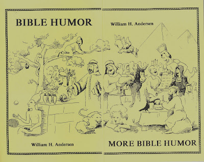

Script writing for ministry
4/12/2009
It didn't take the two books, Bible Humor and More Bible Humor, long to become best sellers for Maher Studios when they were first published in 1992. Each book contains a collection of jokes (in dialogue format) based on Bible characters, incidents, and ideas suggested by the stories. Knowing ventriloquists need humor to make their routines interesting, and knowing such Bible humor was hard to find, author William Andersen set out to search possible resources and then write his own.
While he was searching, one man told Andersen the probable reason there was no such book was because we should not make jokes about the Bible. Author Andersen's response is this: "There is a difference between joking ABOUT the Bible and joking about some of the situations contained therein. I trust people will accept this effort in the spirit in which it is intended. I do not, in any way, attempt to trivialize or make fun of the Bible but I do believe we can use humor to help people get interested in the Bible. This is our purpose."
Bible Humor and More Bible Humor are among the books I have listed for eBay auction this week: Click Here.
Or, the books can be purchased outright at any time. See http://www.maherbookstore.blogspot.com/
I've often wondered how many owners of these books found the humor intended in the cover designs...when paired the two covers, with artwork by Drew Thurston, blend into a single collage representing stories from both the Old and New Testaments:
While he was searching, one man told Andersen the probable reason there was no such book was because we should not make jokes about the Bible. Author Andersen's response is this: "There is a difference between joking ABOUT the Bible and joking about some of the situations contained therein. I trust people will accept this effort in the spirit in which it is intended. I do not, in any way, attempt to trivialize or make fun of the Bible but I do believe we can use humor to help people get interested in the Bible. This is our purpose."
Bible Humor and More Bible Humor are among the books I have listed for eBay auction this week: Click Here.
Or, the books can be purchased outright at any time. See http://www.maherbookstore.blogspot.com/
I've often wondered how many owners of these books found the humor intended in the cover designs...when paired the two covers, with artwork by Drew Thurston, blend into a single collage representing stories from both the Old and New Testaments:
